Feature · coming of age
Kachhua
A boy fights his way out of a Mumbai slum, and finds he can only go on by returning to what he left behind.
Funded development
Co-production SunnyMarch, London · writer Ayub Khan Din
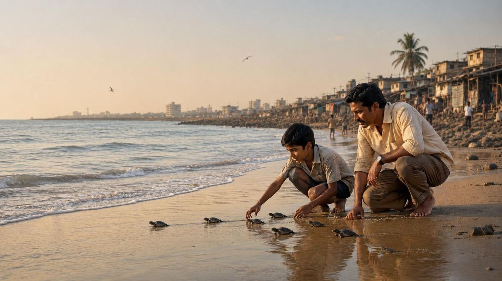
Slate 2026 · The Netherlands · Films and series
Warana develops and produces character-driven films and series with international ambition. The world a story happens in matters as much as the person it happens to.
Where it starts
In October 2015 a lawyer named Afroz Shah began clearing Versova Beach in Mumbai, with only his 84-year-old neighbour to help. He came back one hundred weeks in a row. More than 4,000 tonnes of waste have been removed from two and a half kilometres of sand. The United Nations called it the largest beach clean-up in the world.
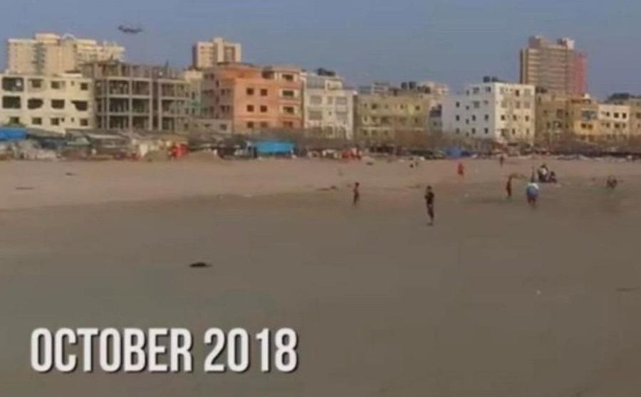
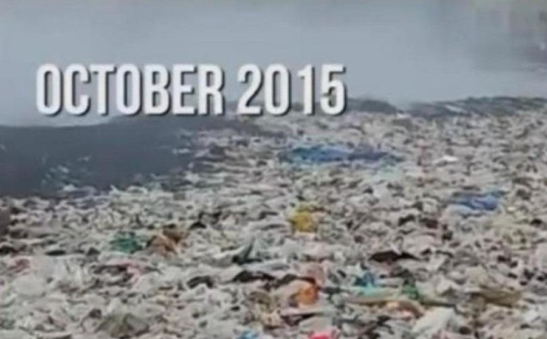
Versova Beach, Mumbai 2.5 km of coastline 4,000+ tonnes removed Drag to compare
This is not a campaign image. It is the first act of Kachhua.
Flagship · Feature film
A boy fights his way out of the poverty of a Mumbai slum. Success brings the understanding that he can only go on if he returns to face the shadows of a past that keeps catching up with him.
Afroz Shah grows up beside Versova Beach, between a loving mother and a troubled father. As a child he watches hatchling turtles crawl to the sea there, with his father beside him. Years later he is a successful lawyer, but the past has not let go of him. He returns to the beach of his childhood and finds it buried under waste — a place no turtle could safely come back to. He starts clearing it alone. What follows grows into a movement of thousands of people.
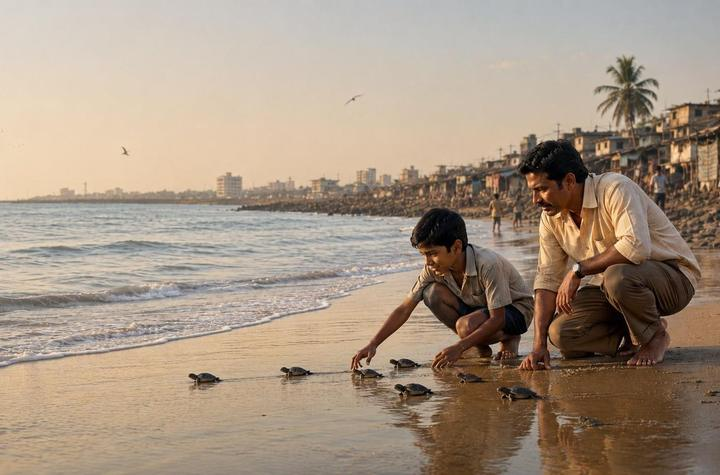
Who Afroz Shah is
Sources: UN Environment Programme, Champions of the Earth 2016 (Inspiration and Action); CNN-News18; GQ India.
The slate
From funded development with a British co-producer to a series still at concept stage. Filter by how far a title has come.
A boy fights his way out of a Mumbai slum, and finds he can only go on by returning to what he left behind.
Co-production SunnyMarch, London · writer Ayub Khan Din
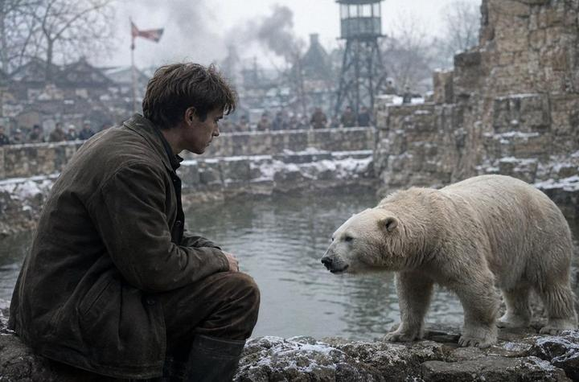
When the war reaches the gates of a Dutch zoo and his father is arrested, shy twenty-year-old Bram has to decide how far he will go to save his father's life's work.
Comparable: Winter in Wartime, The Zookeeper's Wife, War Horse
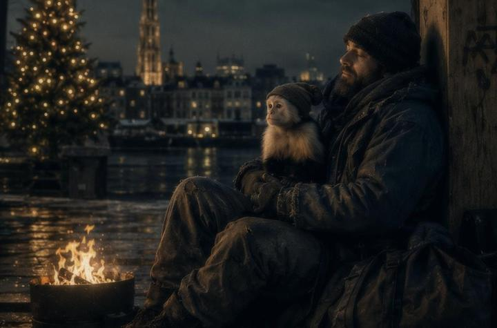
A capuchin monkey ends up in wintry Antwerp by accident and finds shelter with Louis, a gruff homeless ex-musician who has cut off all contact with his family.
Co-production A Team Productions, Belgium · screenplay ready June 2026
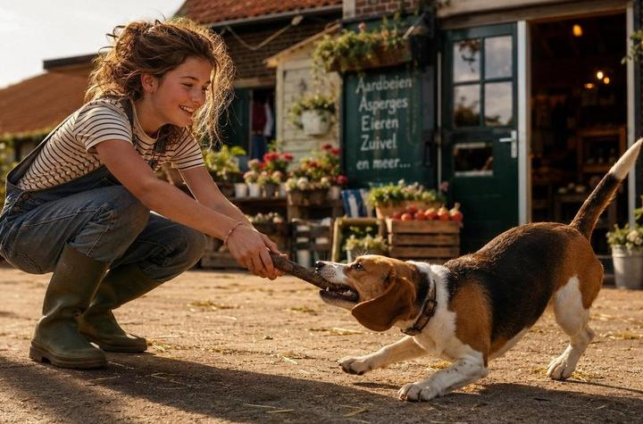
When her beloved beagle puppy is sold to the daughter of a celebrity chef, a farmer's daughter named Bente befriends her to get him back.
From an idea by Britt Dekker · writer Michiel Peereboom
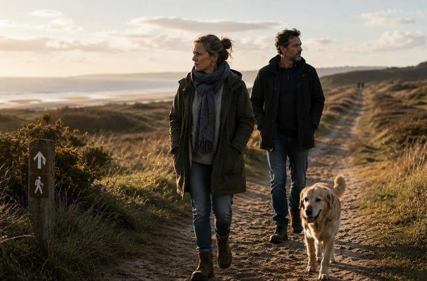
For three Dutch families, the everyday words "see you tomorrow" turn out to be a goodbye. A mosaic about how you build a life afterwards.
To be developed with bereaved families and 113 Suicide Prevention
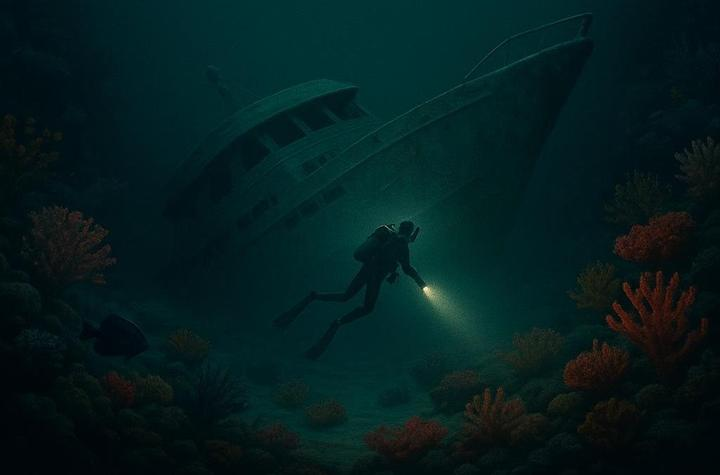
When a dive yacht capsizes, a Belgian couple and a young Egyptian dive instructor are trapped deep underwater in an air pocket.
Based on the Sea Story disaster, 2024
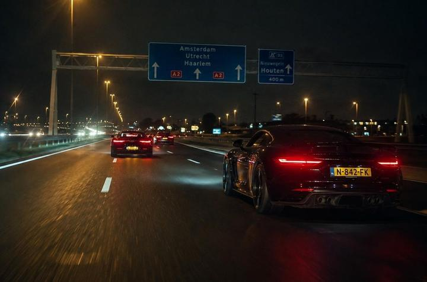
A withdrawn car mechanic is recruited as a secret weapon for an illegal motorway race, and ends up caught between loyalty, winning, and the police.
IP licence on the Dutch computer game · idea Achmed Akkabi
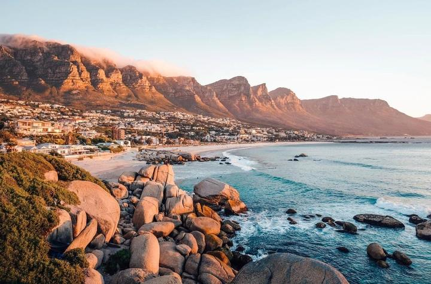
After her mother dies, 22-year-old photographer Isa travels to Cape Town to get answers from the father who left her years ago.
Knokke Off meets Sterling Point
The ask
The Dutch Production Incentive pays out a maximum of €3 million per year per production company. That single fact decides the shape of the answer: twenty million across eight titles is a stack, built out of four countries and three kinds of money. Here is what that stack can look like.
Total slate financing
€20.0 millionRule-based money arrives if you meet the conditions. Contractual money has to be negotiated. Money at risk has to be believed in. The ratio between the three is what makes a slate financeable — not the total.
The producer
Nineteen producer credits since 2018. Since 2024 delegate producer on Dutch drama: Máxima, Sleepers, Sihame and Nordin, which was nominated for a Golden Calf. Before that, line producer and executive producer on Misfit, Silverstar, A French Summer and Candy & Bonita.
The international ambition of the project and the royal richness of the script grabbed me immediately. With so many talented cast and crew members from different countries, it was an extraordinary adventure.Bart Willemsen on Máxima
In May 2020 he conceived, wrote and shot Op gepaste afstand in twelve days, in the middle of lockdown, in an empty Dutch city. It was on Pathé Thuis on 19 May. That is the shortest route from idea to audience any Dutch producer took that year.
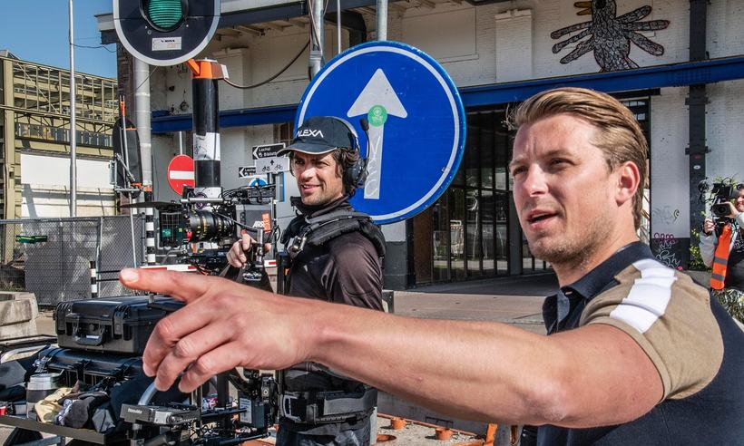
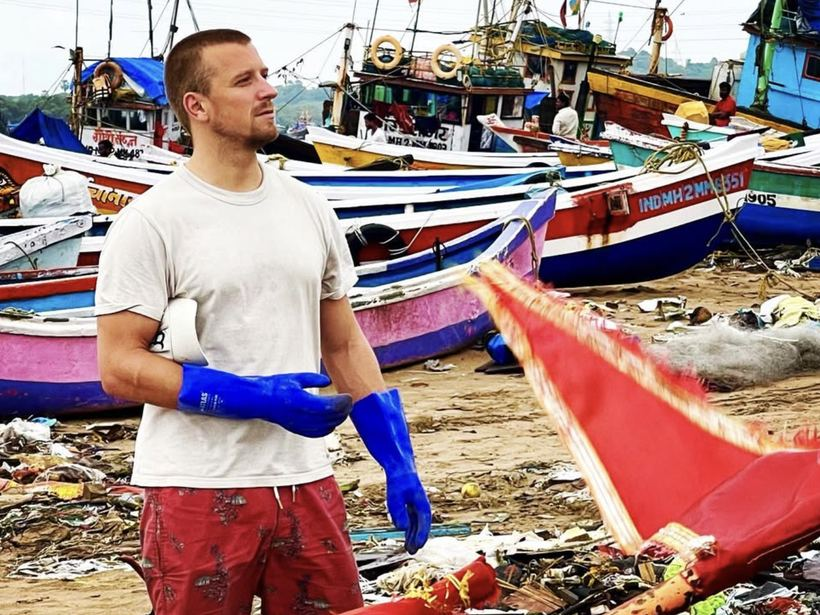
Research for Kachhua on location, Mumbai.
Contact
Choose what you want to talk about and how much time you have. The calendar opens with the right length already set.
1 · About what
Slate 2026 · Nederland · Speelfilms en series
Warana ontwikkelt en produceert karaktergedreven speelfilms en series met internationale ambitie. De wereld waarin een verhaal zich afspeelt weegt daarin net zo zwaar als de mens aan wie het gebeurt.
Waar het begint
In oktober 2015 begon advocaat Afroz Shah in zijn eentje Versova Beach in Mumbai schoon te maken, samen met zijn 84-jarige buurman. Honderd weken achter elkaar kwam hij terug. Er is meer dan 4.000 ton afval weggehaald van twee en een halve kilometer strand. De Verenigde Naties noemden het de grootste strandschoonmaak ter wereld.
Versova Beach, Mumbai 2,5 km kustlijn 4.000+ ton verwijderd Sleep om te vergelijken
Dit is geen campagnebeeld. Het is de eerste akte van Kachhua.
Vlaggenschip · Speelfilm
Een jongen vecht zich los uit de armoede van zijn jeugd in de sloppenwijk. Met het succes komt het besef dat hij alleen verder kan als hij terugkeert en onder ogen ziet wat hem uit zijn verleden blijft achtervolgen.
Afroz Shah groeit op naast Versova Beach, tussen een liefdevolle moeder en een getroebleerde vader. Als kind ziet hij daar met zijn vader jonge schildpadden naar zee kruipen. Jaren later is hij een succesvol advocaat, maar het verleden laat hem niet los. Hij keert terug naar het strand van zijn jeugd en vindt het bedolven onder afval — een plek waar geen schildpad meer veilig kan terugkeren. Hij begint in zijn eentje schoon te maken. Wat volgt, groeit uit tot een beweging van duizenden mensen.
Wie Afroz Shah is
Bronnen: UN Environment Programme, Champions of the Earth 2016 (categorie Inspiration and Action); CNN-News18; GQ India.
De slate
Van gefinancierde ontwikkeling met een Britse coproducent tot een serie in conceptfase. Filter op hoe ver een titel is.
Een jongen vecht zich los uit de sloppenwijk, en ontdekt dat hij alleen verder kan als hij terugkeert naar wat hij achterliet.
Coproductie SunnyMarch, Londen · schrijver Ayub Khan Din
Wanneer de oorlog de poorten van Ouwehands Dierenpark bereikt en zijn vader wordt opgepakt, moet de verlegen Bram bepalen hoe ver hij gaat om het levenswerk van zijn vader te redden.
Vergelijkbaar: Oorlogswinter, The Zookeeper's Wife, War Horse
Een kapucijnaapje belandt per ongeluk in winters Antwerpen en vindt onderdak bij Louis, een norse dakloze ex-muzikant die ieder contact met zijn familie heeft verbroken.
Coproductie A Team Productions, België · scenario gereed juni 2026
Als haar liefste beagle-puppy wordt verkocht aan de dochter van een sterrenchef, sluit boerendochter Bente vriendschap met haar om hem terug te krijgen.
Naar een idee van Britt Dekker · schrijver Michiel Peereboom
Voor drie Nederlandse gezinnen blijken de alledaagse woorden "tot morgen" onverwacht een afscheid voor altijd. Een mozaïek over hoe je daarna verder bouwt.
Te ontwikkelen met nabestaanden en 113 Zelfmoordpreventie
Wanneer een duikjacht kapseist raken een Belgisch koppel en een jonge Egyptische duikinstructeur diep onder water opgesloten in een luchtbel.
Gebaseerd op de ramp met de Sea Story, 2024
Een teruggetrokken automonteur wordt als troef gerekruteerd voor de geheime illegale A2-race, en komt klem te zitten tussen loyaliteit, de overwinning en de politie.
IP-licentie op de Nederlandse computergame · idee Achmed Akkabi
Na de dood van haar moeder vertrekt de 22-jarige fotografe Isa naar Kaapstad om antwoorden te vinden bij de vader die haar jaren geleden achterliet.
Knokke Off ontmoet Sterling Point
De vraag
De Nederlandse Production Incentive keert maximaal €3 miljoen per jaar per productiemaatschappij uit. Dat ene feit bepaalt de vorm van de vraag al: twintig miljoen over acht titels is een stapel, opgebouwd uit vier landen en drie soorten geld. Hieronder staat hoe die stapel eruit kan zien.
Totale slate-financiering
€20,0 miljoenRegelgebonden geld krijg je als je aan de voorwaarden voldoet. Over contractueel geld moet je onderhandelen. In risicodragend geld moet iemand geloven. De verhouding daartussen maakt een slate financierbaar — niet het totaal.
De producent
Negentien producentencredits sinds 2018. Sinds 2024 delegate producer voor Nederlands drama: Máxima, Sleepers, Sihame en Nordin, dat een Gouden Kalf-nominatie kreeg. Daarvoor line producer en uitvoerend producent bij Misfit, Silverstar, Zomer in Frankrijk en Candy & Bonita.
De internationale ambitie van het project en de koninklijke rijkheid van het script grepen mij direct aan. Dankzij zóveel talentvolle cast en crew uit verschillende landen was het een waanzinnig avontuur.Bart Willemsen over Máxima
In mei 2020 bedacht, schreef en draaide hij Op gepaste afstand in twaalf dagen, midden in de lockdown, in een leeg Tilburg. De film stond op 19 mei op Pathé Thuis. Dat was de kortste route van idee naar publiek die een Nederlandse producent dat jaar liep.
Onderzoek voor Kachhua ter plaatse, Mumbai.
Contact
Kies waar je het over wilt hebben en hoeveel tijd je hebt. De agenda opent meteen met de juiste lengte.
1 · Waarover